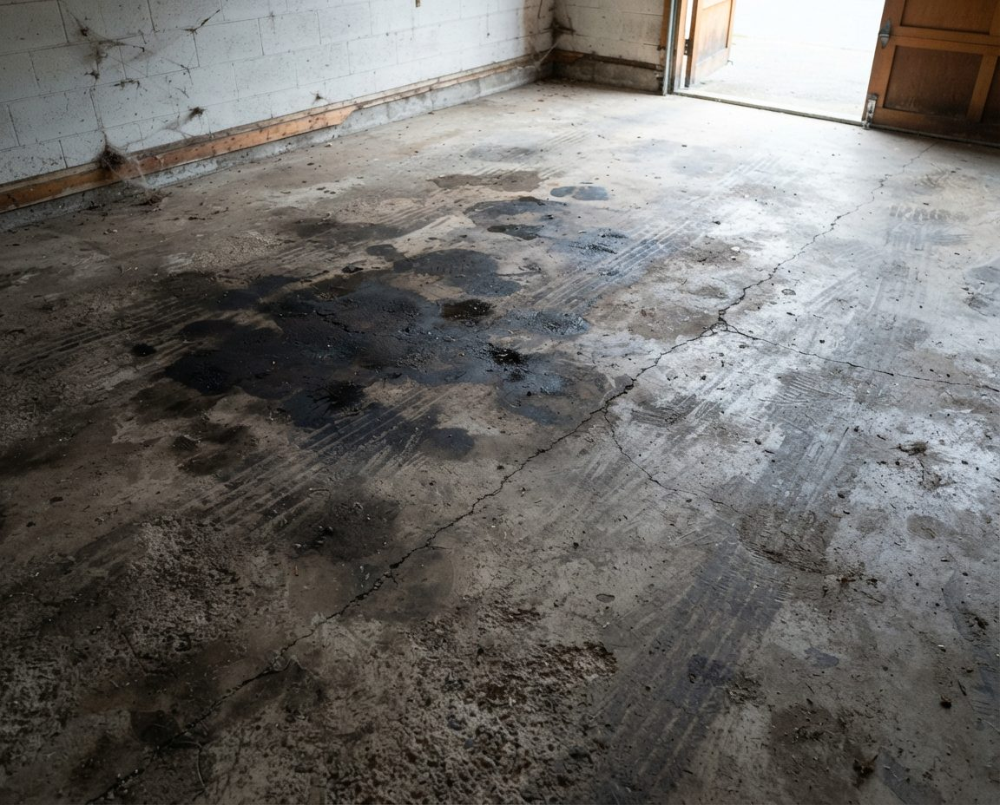
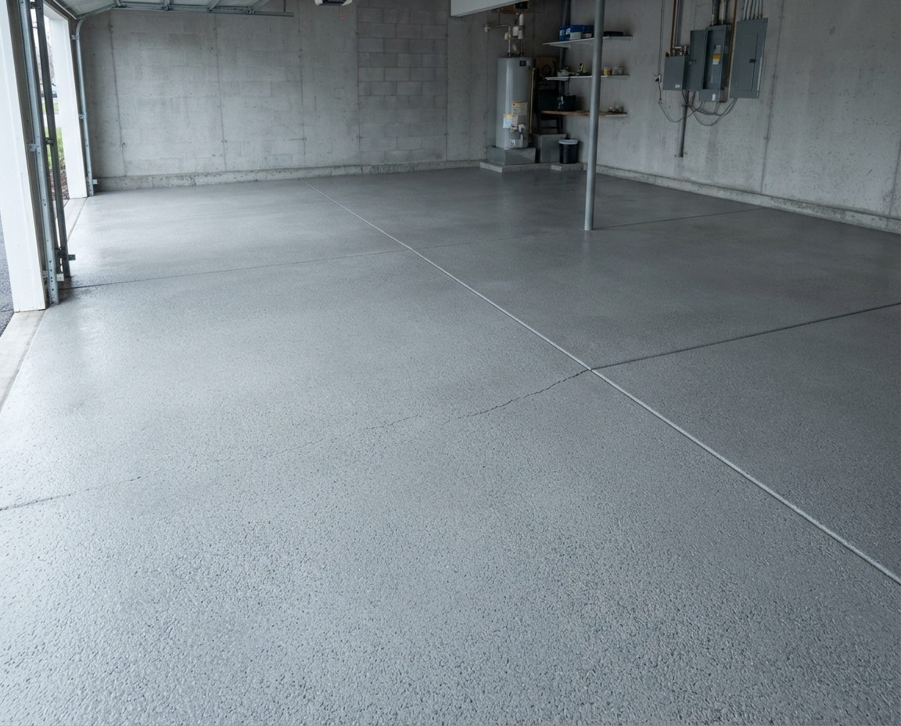

Before & After
The four transformations we're booked for most often across Metro Vancouver.


Double garage — full declutter, clean and organiseEverything off the slab and into sealed bins on wall-mounted steel shelving, bikes hung clear of the damp floor, seasonal gear moved to overhead racking.


Garage floor — degreased and pressure washedSet-in oil drawn back out of the slab with a poultice rather than blasted at the surface, then hot-water washed and force-dried.


Back-lane character garage — cleared and reorganisedThe most common Vancouver garage type and the most affected. Wire shelving between the original studs, everything sealed and lifted off the slab.


Reclaimed parking — the car back insideThe zone most Vancouver homeowners quietly surrender, and the one they most regret losing. We design outward from it.